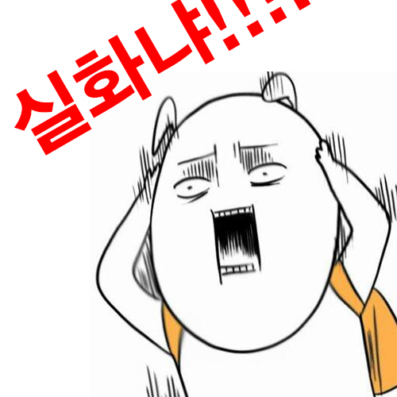
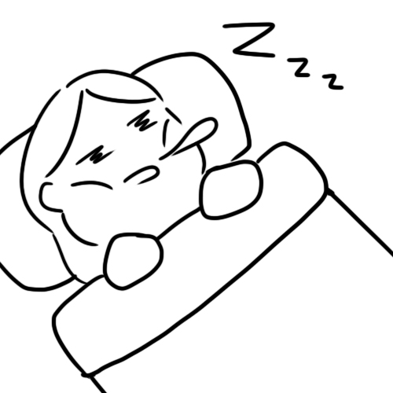

방학동안 일본에서 열리는 엑스포에 작품을 출품할 기회가 생겼다.
한번 해보자!라는 마음으로 가볍게 시작했는데...
생각보다 할 일이 엄청 많았다!!!
학기 중에 유기동물 관련 프로젝트를 진행했는데 워낙 프로젝트성이 짙어 작품을 보고 만든 의도를 파악하게 하려니 너무 어려웠다. 어떻게 사람들에게 다가가야 할 지 고민에 고민을 거듭하고 수많은 회의 끝에 드디어 제작에 들어갔다. 팀원들과 함께 작업하고 피드백에 따라 수정하는 것을 수차례 반복하다보니 어느새 최종 결과물 제출일이 다가왔고, 두근거리는 마음을 가지고 일본으로 출발하게 됐다.
박람회장에 도착하고 모두 모여 전시 장소를 꾸미기 시작했다. 주제가 다양한 작품들을 한곳에 전시하는 것은 정말 어렵다는 것을 이때 비로소 깨달았던 것 같다. 미리 전시공간에 대해 많이 생각해봤지만 실제로 해보니 더더욱 어려웠던 것 같다.
이번이 전시를 기획하는 것이 처음이라 많이 실수하고 수정했던 것 같다. 다음에도 이런 기회가 또 올지 모르겠지만 그땐 이번 경험을 기반으로 더 잘 할 수 있을 것 같다!!!
한국으로 와서는 긴장이 풀려서 그런지 한동안 몸살로 고생했다. 그만큼 고생도 많이 했기 때문인걸까? 그리고 모든 일정을 마치고 나니 벌써 2월 중순이었다! 길지만 짧았던 나의 방학은 많은 경험을 할 수 있었지만 험난했던 시간이었다. 방학이 2주가 남아서야 그동안 못잔 잠을 원없이 잘 수 있었다는건 비밀
